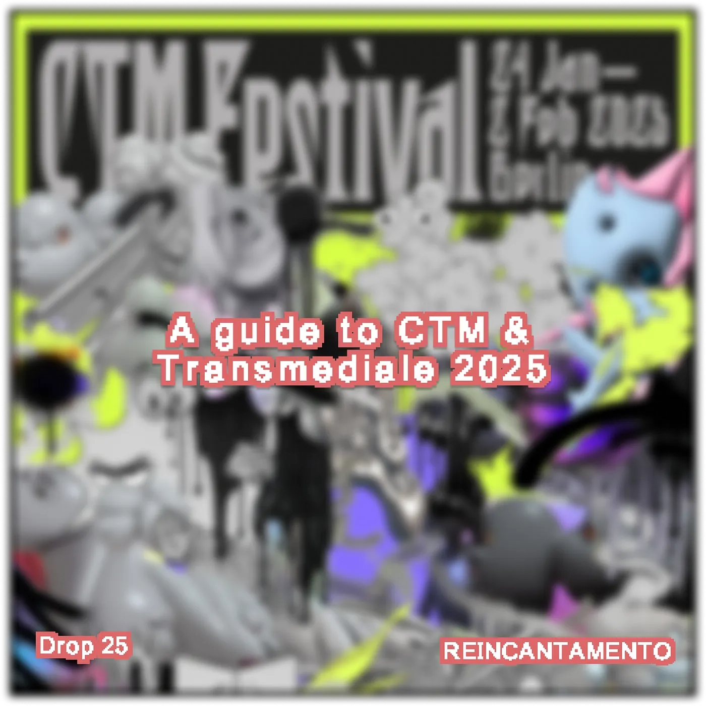
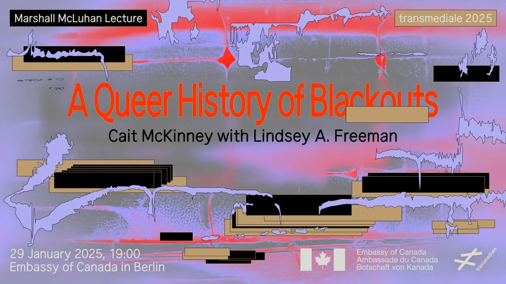
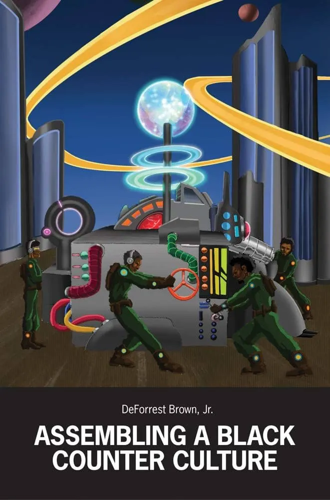
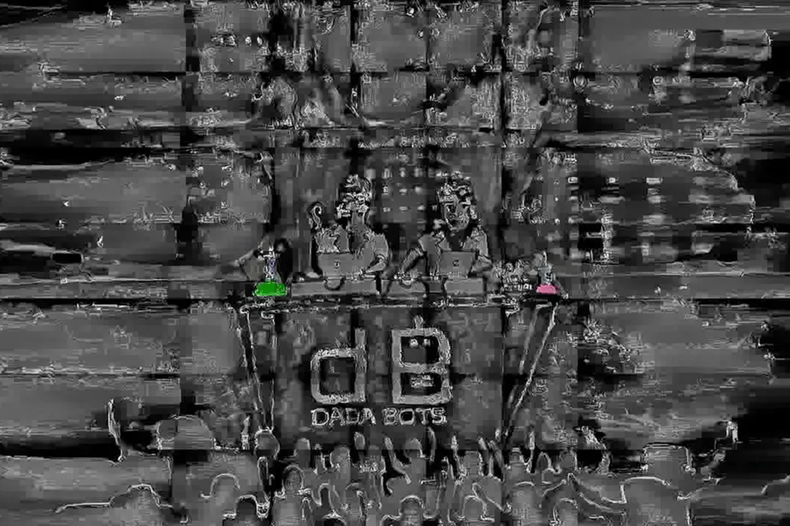
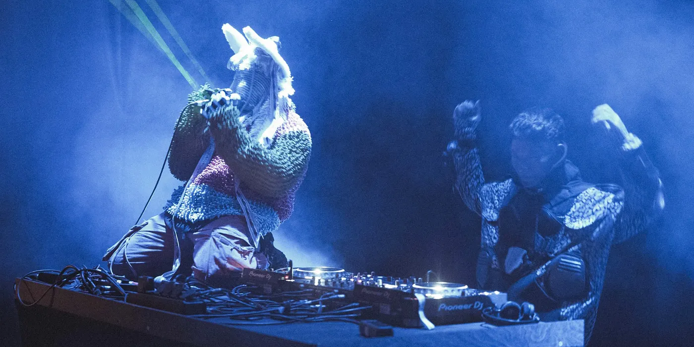

Drop #25 · January 23, 2025 · 5 min read
Hey everyone (▰˘◡˘▰)
A very Berlin-centric DROP. The best ten days of Berlin winter are upon us: CTM 2025, the legendary experimental electronic music festival, and Transmediale 2025, a staple at the intersection of art & digital cultures, are about to animate the German capital.
REINCANTAMENTO is happy to be a media partner of the festivals and to help navigate the vast program of both events, I decided to gather my personal recommendations among concerts, club nights, workshops, and lectures. Of course, it is a personal list so something will be missing. If you’re in town for the festivals, don’t hesitate to get in touch and say hi : ) See y’all around!
A reminder: also in 2025, REINCANTAMENTO is sustained by voluntary work. If you like what we do, consider donating or getting a paid subscription to support what we do!

Silent Green, Jan 25th - These New Puritans + Dis Fig & Spooky-J
In the cavernous Betonhalle of Silent Green - a former crematorium - the iconic and long-time missing band These New Puritans will present their new record. If this wasn’t enough, Dis Fig will perform with Spooky-J a cathartic ritual moving between bass music, dub, and noise
OXI, January 25th - Meta Rave Takeover
This is the kind of night that makes you forget is 0°C outside. Pure latin-core heat by one of the best Berlin collective. Meta Rave last summer was one of my club highlights of the last year. I’m particularly excited for seeing Lechuga Zafiro' again, this time with a live set.
Silent Green, January 26th - Xiu Xiu + Kuntari
Again in Silent Green's underground chamber. This time, you have Kuntari’s Indonesian rhythms - they call it primalcore - to open the night and then legendary band Xiu Xiu to spiral together in a vortex of fierce, hallucinated vulnerability. I hope Xiu Xiu plays their take on Twin Peaks soundtrack to honour David Lynch.
Radialsystem, January 28th - Nídia & Valentina "Resonant Resilience"
I loved Nídia & Valentina’s "Estradas" album and I loved them live at Unsound 2024. A spectacle of polyrhythms and ecstatic joy. To not be missed.
Tickets here.
Embassy of Canada, January 29th - McLuhan Lecture "A Queer History of Blackouts" with Cait McKinney

This is the classic Transmediale opening lecture. Cait McKinney’s A Queer History of Blackouts, the Marshall McLuhan Lecture of transmediale 2025, traces the history of online blackouts to HIV/AIDS activism in the mid-1990s, showing how and why blackouts trade in feelings of frustration with broken, harmful systems and infrastructures. Register for free here.
Silent Green, January 30th (evening) - BETWEINstitute Forum & Opening Night
We can’t pretend it’s the best moment for Berlin cultural scene. After 2024, real annus horribilis, it’s time to organize and imagine new cooperative modes of cultural production. Come at 4pm at Silent Green to discuss the future of the city!
Later: the official opening night of Transmediale will take place with films screening and live performative lectures by Tati au Miel and DeForrest Brown, Jr (particularly excited about this one!). In the cinema room, a film loop will be on view presenting works from Nina Davies, Aaron Ratajczak, Charlotte Zhang, and Sorowit Songsataya.
Registration for free here for the Forum.

Berghain, January 30th (night)
This lineup reads like a global survey of club music. aya's fractured rhythms with MFO's visuals in the main room, Kasimyn's fusion of gabber and Indonesian trance rituals, Minna-No Kimochi's deconstructed trance, and the infectious energy of Deize Tigrona's Funk Carioca upstairs. It's going to be one of those nights where every floor tells a different story of where electronic music is heading. Not for the faint hearted.
Tickets here.
Alte Münze, January 31st (night) - Surf Gang & Dadabots

Another night at the edges of clubbing in one of Berlin historic venues. Surf Gang's takeover of the Maschine floor will ensure a night of weird trap beats and ethereal bangers from one of the most interesting rap collectives out there. Meanwhile, you’ll have Dadabots running an entire night of AI-generated bits in the Tresor floor. Dadabots are the most serious experimental artists using AI right now and they are promising to re-imagine the role of DJing itself.
FYI: Surf Gang’s evilgiane produced this banger.
Tickets here.
HKW, February 1st, Synthesis 2 - ZULI & Hulubalang
The second collaborative night going down at HKW. Two heavy-hitters of electronic music going for performative shows. ZULI, a bass wizard out of Cairo, is going to tear reality apart with "Lambda”. Hulubalang, one of the two Gabber Modus Operandi, will dive into Indonesian war archives to present a ritualistic show between flesh and phantom.

Tickets here.
HKW, January 31st - February 2nd - Lectures
Transmediale’s lecture program will go down at HKW. While it’s hard to anticipate the content of a lecture, I’m hyped about DeForrest Brown, Jr.’s lecture and screening and, Federico Campagna on Saturday afternoon. Plus, Sunday’s dialogue with Silvio Lorusso and Chris Lee on Digital Maximalism vs. Existenzminimum.
You have to get the tickets for the single day or for the single events.
Volksbühne, February 1st - claire rousay with Martyna Basta
I’m so happy I can see claire rousay live! Her latest album was one of my favourite recent music discoveries: a collection emotional landscapes out of bedroom noise and stretched vocals hit. A cozy night to land back in the normal world.
Tickets here.